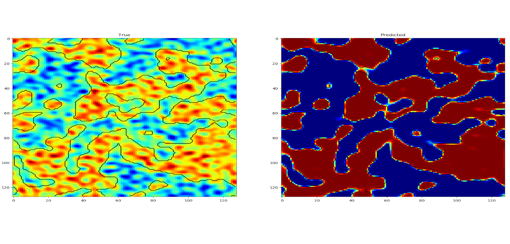
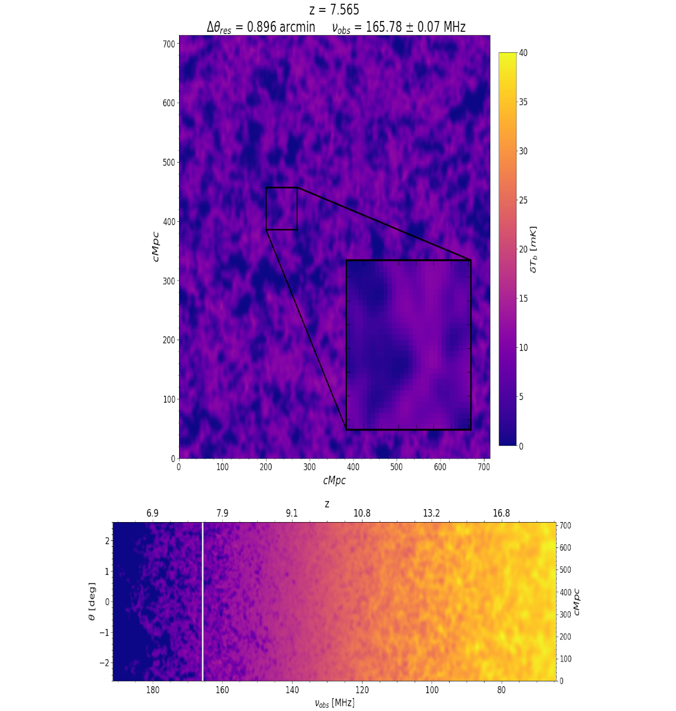

Michele Bianco
Astronomy Centre, University of Sussex
Sussex House, BN2 9RH Brighton, UK+44 (0) 1273 877 418 - M.Bianco@sussex.ac.uk
About
I am a PhD student, part of the Reionization group lead by Prof. Ilian T. Iliev, at the Astronomy Centre of the University of Sussex.
My main focus is the study of the Epoch of Reionization (EoR) and with the help of Radio-Transfer and N-body simulation, we provide numerical support for the Low-Frequency Array (LOFAR) and Square Kilometre Array (SKA) EoR experiments.
These simulations playing a crutial role in the preparation and understanding of the magnitude and properties of the expected signals.
Current & Past Projects
List of projects that I took part or that are still going on.

AltCosmEoR
Study the effect of alternative cosmology on the observable of the Epoch of Reionization

SegNet3D
Neural network to identify ionised region during early stage of the cosmic reionization

DECI-14
The impact of inhomogeneous subgrid clumping on cosmic reionization II: modelling stochasticity
Updated:
Education
Doctorate in Astrophysics
2017 - present
University of Sussex, United Kingdom
I employ Radio-Transfer and N-body simulations such as RAMSES-RT, C2-Ray and CP3M, to study the observational signatures of the Epoch of Reionization (EoR). At the moment I am developping a method to implement the sub-grid inhomogeneity to the C2-Ray code (see my projects for more details).
Master Degree in Astrophysics
2015 - 2017
Ludwig-Maximillians-University LMU Munich, Germany
I have explored the effect of large scale structure correlation on Galaxy cluster counts. I studied the mass and redshift dependencies of the Halo Number Counts Variance (HNCV), for order of magnitude accivable with upcoming surveys e.g: eRosita, DES, Euclid. I employed of a large suite of simulated cluster catalogs, using the PINpointing Orbit-Crossing Collapsed HIerarchical Objects PINOCCHIO code, a semi-analytic Lagrangian code that generates halo catalog on a LCDM cosmology. (Link to my thesis: HERE)
Bachelor of Science in Physics & Mathematics
2011 - 2014
University of Fribourg UNIFR, Switzerland
My undergraduated formation consisted in a combined degree with major in Physics (150 ECTS) and minor in Mathematics (30 ECTS). Physics lectures where mainly focused on theoretical explaination in class, with following practical workshops, for a total of 12 month long experiments. Varing topics were discussed, from atomic physics to spectroscopy and an introduction to N-body problem, alongside with advance differential analysis, linear algebra and statistical methods.
Training
Jul. 2019 NGCM Summer Academy at the University of Southampton
workshop on VTK visualization, Machine Learning and GPU acceleration with CUDA
May. 2019 EuroHPC Submmit Week
a PRACEdays19 event, gave a talk about "Multiscale Reionization" in Poznan, Poland
Mar. 2019 PRACE Winter School 2019 - Introduction to Machine Learning for Scientists
a PRACE training organized by the Flemish Supercomputer Center (VSC) in Leuven, Belgium
Dec. 2018 Parallel and GPU Programming in Python
a PRACE training held by SURFsara in Amsterdam, the Netherlands
Nov. 2018 GPU Programming with CUDA
a PRACE training held by EPCC at Imperial College London, United Kingdom
Sep. 2018 RAMSES User Meeting 2018
organized by the Centre de Recherche Astrophysique in Lyon, France
Oct. 2017 MPI and OpenMP for beginners and Advanced Topics in Parallel Programming
held by the High Performance Computing Center HLRS in Stuttgart, Germany
Skills
As part of my PhD, I work with a series of high performaces computers (HPC) part of the Partnership For Advanced Computing in Europe (PRACE) Tier-0 and Tier-1 resources.
▶ KAY, Irish Centre of High-End Computing ICHEC(Project DECI-15, at present)
▶ CINECA, Super Computing Application and Innovation SCAI(Project DECI-15, at present)
▶ JURECA, Jülich Research on Exascale Cluster Architectures JSC (EoRNN project, Oct. 2019)
▶ JUWELS, Jülich Wizard for European Leadership Science JSC (EoRNN project, Oct. 2019)
▶ Piz Daint, Swiss National Supercomputer Centre CSCS (Project DECI-14, Apr. 2017)
▶ MareNostrum IV (2017), Barcelona Supercomputing Centre BSC (Project DECI-14, Apr. 2017)
▶ APOLLO Cluster, permanent account at the University of Sussex
Programming languages:
▶ Python (NumPy, SciKit, Pandas, TensorFlow, Keras)
▶ Fortran95
▶ C/C++
▶ HTML/CSS
▶ Batch Script
Astronomical and Scientific tools:
▶ DS9, TopCat, Aladin Sky Atlas
▶ R, Matlab, Wolfram Mathematica, Maple (2017)
Visualization tools:
▶ VTK, MayaVi
{kind=link}
{kind=link}
{kind=link}
{kind=link}
{kind=link}
{kind=link}
{kind=link}
{kind=link}
{kind=link}